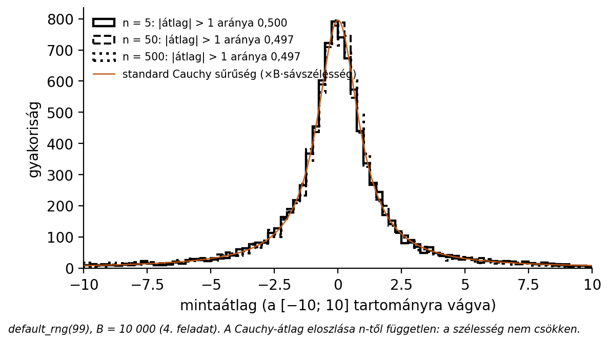

Belépő · szint: közép · idő: 60 perc · eszköz: NumPy, SciPy
Előfeltétel: 14.3. alfejezet · Célkészség: Nagy számok és centrális határeloszlás · Kimenet: működő kód és a labor ellenőrző tesztje.
A Northstar kezdőlabor orders.csv fájljában a
delivery_days pozitív egész: az átlaga 5,2 nap, a szórása
2,5 nap, a ferdesége enyhe (kb. 0,13), a maximuma 13 nap. Más webshopok
szállítási ideje ennél jóval ferdébb is lehet, hosszú, 10–20 napos
késési farokkal; ezért a lenti szimulációban szemléltetésként egy
erősebben ferde modellt használunk. Tegyük fel, hogy a termékmenedzser
azt kérdezi: „Ha holnap 100 új rendelés érkezik, mennyire lesz pontos a
7 napos kézbesítési átlagunk becslése?” A kérdés megválaszolásához nem
elég az adatok hisztogramját nézni: külön kell választanunk az
adatok eloszlását és az átlag mintavételi
eloszlását. Ez az alfejezet ezt a két fogalmat építi fel
szimulációval, a nagy számok törvénye (law of large numbers, LLN) és a
centrális határeloszlás-tétel (central limit theorem, CLT)
segítségével.
Kiinduló becslés: ha a delivery_days szórása a laborbeli
nap, akkor 100 rendelés átlagának bizonytalansága nagyjából
nap lehet. Ezt a számot ebben az alfejezetben pontosan értelmezzük, és
ellenőrizzük, milyen feltételek mellett igaz.
Legyen egy elemű minta. Minden ugyanabból az eloszlásból származik, várható értéke , varianciája , és a megfigyelések függetlenek (iid, a 14.3. alfejezetben bevezetett értelemben). A mintaátlag:
Az átlag maga is véletlen mennyiség, hiszen másik mintát véve más értéket kapunk. Ha és , azaz minden elem 0 vagy 1, fejenként valószínűséggel, akkor a lehetséges minták és átlagaik:
| Minta | Valószínűség | |
|---|---|---|
| (0, 0) | 0,0 | 0,25 |
| (0, 1) vagy (1, 0) | 0,5 | 0,50 |
| (1, 1) | 1,0 | 0,25 |
Itt és . Az átlag várható értéke , varianciája pedig . Ez a kézi ellenőrzés mutatja a két alapazonosságot:
A második azért igaz, mert a variancia skálázási szabálya szerint , és független tagok varianciája összeadódik. Az átlag tehát ugyanazon körül ingadozik, de a szórása -szeresére csökken. Ezt a mennyiséget nevezzük standard hibának (standard error, SE):
A standard hiba mértékegysége megegyezik mértékegységével: a fenti szállítási példában nap. Fontos megkülönböztetni a minta szórásától, -től, amely az egyes adatpontok szóródását méri; a standard hiba az átlag becslésének bizonytalansága.
A mintavételi eloszlás (sampling distribution) egy statisztika — például az átlag — eloszlása az összes lehetséges azonos méretű minta felett. A gyakorlatban ezt úgy közelítjük, hogy sok független mintát veszünk ugyanabból a populációból, és mindegyikből kiszámoljuk a statisztikát. Amikor a fenti Bernoulli-példában -vel a három lehetséges átlagérték valószínűségeit soroltuk fel, valójában a mintavételi eloszlást írtuk le.
A nagy számok törvénye (LLN) azt mondja ki, hogy növekedtével az átlag egyre közelebb kerül -höz: nagy mintán a véletlen átlagolás kiátlagolja az egyedi eltéréseket. A standard hiba -es csökkenése ennek a kvantitatív formája: -nál tízszer kisebb a szóródás, mint -nél.
A centrális határeloszlás-tétel (CLT) ennél többet állít: nemcsak azt, hogy az átlag koncentrálódik, hanem azt is, hogy az átlag eloszlásának alakja haranggörbéhez tart. Pontosabban, ha iid, és véges, akkor a standardizált átlag
eloszlása esetén a standard normális eloszláshoz, -hez konvergál. Ez akkor is igaz, ha maga erősen ferde vagy akár diszkrét. A konvergencia eloszlásbeli, nem pontonkénti: a hisztogramja egyre jobban illeszkedik a normális sűrűségre.
A tétel feltételei:
A CLT nem azt állítja, hogy az adatok maguk normálissá válnak nagy mintán. Egy exponenciális eloszlású adathalmaz elemnél is jobbra ferde marad; csak az átlag eloszlása lesz közel normális. Ez a leggyakoribb félreértés; a 13.2. alfejezetben tárgyalt ferde eloszlásokra ugyanígy vonatkozik.
A centrális határeloszlás-tétel nem feltétel nélküli: független (vagy gyengén függő), azonos eloszlású, véges várható értékű és varianciájú változók kellenek. Három ellenpélda:
| Adat | Diagnosztika | Eredmény | |
|---|---|---|---|
| iid egyenletes | 30 | aránya | 0.0545 |
| Cauchy (végtelen variancia) | 30 | aránya | 0.478 |
| AR(1), | 100 | SE / iid SE | 2.999 |
Az iid egyenletes átlag jól normalizálódik: a standardizált átlag, () szélső aránya , közel a normális eloszlás szerinti 5%-hoz. (A nyers esemény itt nem informatív: az egyenletes átlag a korlátosság miatt sosem lép ki a intervallumból.) A Cauchy-eloszlásnak nincs véges varianciája, ezért a mintaátlag nem tömörül a várható érték körül, és a standardizált átlag továbbra is széles: a 2000 szimulációból 47.8% esik 1-en túl (a standard Cauchy-változók átlaga maga is standard Cauchy, így ez az arány minden -re kb. 0,5). Az AR(1) függő sorozatnál a mintaátlag szórása 2.999-szerese az iid esetnek, ami közelítőleg (a véges -ra pontosabban kb. ); a függés tehát az effektív elemszámot csökkenti, nem tünteti el a normalitást, de a naiv standard error hibás.
A ferdeség külön eset: véges variancia mellett a CLT érvényes, de a konvergencia lassú; erősen ferde adatnál nagyobb kell a normálközelítéshez. A tétel tehát nem azt mondja, hogy „minden átlag normális”, hanem azt, hogy megfelelő feltételek mellett a standardizált átlag eloszlása a normálishoz tart.
import numpy as np
SEED = 20261029 # minden szimuláció saját, azonos seedű generátort kap
def means(distribution, n, repeats=2000, seed=SEED):
rng = np.random.default_rng(seed)
if distribution == "uniform":
draws = rng.uniform(-1, 1, size=(repeats, n))
else:
draws = rng.standard_cauchy(size=(repeats, n))
return draws.mean(axis=1)
uniform = means("uniform", 30)
cauchy = means("cauchy", 30)
z = uniform / (np.sqrt(1 / 3) / np.sqrt(30)) # standardizált átlag
print("uniform |Z|>1.96:", np.mean(np.abs(z) > 1.96))
print("cauchy extreme:", np.mean(np.abs(cauchy) > 1))
def ar1_means(n, rho=0.8, repeats=2000, seed=SEED):
rng = np.random.default_rng(seed)
values = np.zeros((repeats, n))
values[:, 0] = rng.normal(size=repeats)
noise = rng.normal(scale=np.sqrt(1 - rho**2), size=(repeats, n))
for t in range(1, n):
values[:, t] = rho * values[:, t-1] + noise[:, t]
return values.mean(axis=1)
ar = ar1_means(100)
print("AR SE ratio:", ar.std(ddof=1) / (1 / np.sqrt(100)))A kód kimenete (NumPy 2.2.6; a táblázat értékei):
uniform |Z|>1.96: 0.0545,
cauchy extreme: 0.478,
AR SE ratio: 2.9987205884942245. A
lab/clt_conditions.py sample_means(),
ar1_means(), extreme_share(),
standardized_extreme_share() és report()
függvényei ugyanezt a három diagnosztikát adják, ugyanezekkel a
seedekkel; a tests/test_clt_conditions.py a Cauchy szélső
arányát, az iid egyenletes nullához közeli arányát és az AR(1) SE-arányt
ellenőrzi.
A szállítási idő utánzatául válasszunk eloszlást, amelynek várható értéke nap, szórása nap. Ez jobbra ferde: sok érték 0 és 5 nap között, de ritkán 20-30 napos késések is előfordulnak. Négy mintanagysággal dolgozunk: . Minden -re:
import numpy as np
import matplotlib.pyplot as plt
from scipy import stats
rng = np.random.default_rng(20261020) # szimulációs seed, nem a Northstar-generátoré
n_sim = 10_000 # ismételt minták száma B
mu = 6.0 # az exponenciális várható értéke (nap)
sigma = 6.0 # az exponenciális szórása (nap)
ns = [1, 5, 30, 100] # mintanagyságok
fig, axes = plt.subplots(2, 4, figsize=(14, 6), sharex="col")
for j, n in enumerate(ns):
# Egyetlen adatminta: az adatok eloszlását mutatja
one_sample = rng.exponential(scale=mu, size=n) # shape: (n,)
axes[0, j].hist(one_sample, bins=25, density=True,
color="steelblue", alpha=0.7, range=(0, 30))
axes[0, j].set_title(f"Adat, n={n}")
if j == 0:
axes[0, 0].set_ylabel("Sűrűség")
# B darab minta átlaga: a mintavételi eloszlás közelítése
samples = rng.exponential(scale=mu, size=(n_sim, n)) # shape: (B, n)
means = samples.mean(axis=1) # shape: (B,)
axes[1, j].hist(means, bins=30, density=True,
color="darkorange", alpha=0.7)
# A CLT szerinti normális sűrűség: N(mu, sigma/sqrt(n))
xs = np.linspace(mu - 4 * sigma / np.sqrt(n), mu + 4 * sigma / np.sqrt(n), 300)
axes[1, j].plot(xs, stats.norm.pdf(xs, loc=mu, scale=sigma / np.sqrt(n)),
"r-", linewidth=2)
axes[1, j].set_title(f"Átlag, n={n}")
axes[1, j].set_xlabel("nap")
if j == 0:
axes[1, 0].set_ylabel("Sűrűség")
fig.suptitle("Az adat eloszlása (fent) és az átlag mintavételi eloszlása (lent)")
plt.tight_layout()
plt.show()A futtatott kód számszerű eredményét az ábra felirata adja (az átlagok átlaga és szórása -enként). A felső sor hisztogramjai minden -re jobbra ferde exponenciális alakot mutatnak: -nál is a 0-5 napos sáv a leggyakoribb, és a farok 20 nap fölé nyúlik. Az alsó sorban -nél az átlag eloszlása azonos az adat eloszlásával. -nél a hisztogram még enyhén jobbra ferde, de -nál és -nál a piros normális görbe már szemmel láthatóan együtt fut a hisztogrammal. A harang alak középpontja mindvégig nap körül van, a szélessége viszont növekedtével láthatóan csökken: -nál a vízszintes tengelyen már csak a 4-8 napos sáv a releváns.
A szimuláció numerikus ellenőrzéséhez az átlagok tömbjére vonatkozó két invariant használható. Mivel a átlag maga is egy minta a mintavételi eloszlásból, az ő átlaguk közelíti -t, a szórásuk pedig közelíti -t. A Monte Carlo közelítés hibája nagyjából szintű a standardizált mennyiségekre, ezért a tűréshatárt -függően kell megadni. Az átlagok átlagának várható eltérése -től : -re , -re kb. , -ra kb. , -ra nap. Négyszeres biztonsággal () az elfogadható tűrés rendre kb. , , és nap; a futtatott , , és ezen belül van. Az átlagok szórása pedig értékétől legfeljebb néhány százalékkal térhet el.
Például -ra az elméleti standard hiba nap. Ha a szimulált átlagok szórása és nap közé esik, az összhangban van a képlettel. Az esetben a standard hiba nap, tehát öt rendelés átlaga még nagyon zajos becslés — ezért nem érdemes kis mintából üzleti döntést hozni.
A standardizált értékekre is ellenőrizhetünk. Ha a means
tömb átlaga
és szórása
,
akkor a z = (means - mu) / (sigma / np.sqrt(n)) tömb
hisztogramjának közelítenie kell a
sűrűséget. Ennek ferdesége 0-hoz, lapultsága 3-hoz tart
növekedtével; kis
-nél
az exponenciális alapeloszlás ferdesége miatt még látható eltérés
maradhat.
A Northstar delivery_days oszlopára ugyanez a logika
érvényes, de ott
-t
és
-t
nem ismerjük, csak a mintából becsülhetjük. A becslés bizonytalansága a
15.2. alfejezetben tárgyalt
konfidenciaintervallum témája lesz; itt a generáló paramétereket
pontosan ismerő szimuláció volt a cél.
A centrális határeloszlás-tétel nem azt mondja ki, hogy a nyers adatok eloszlása normálissá válik, hanem a megfelelően standardizált mintaátlag közelítő eloszlásáról szól. Függő adatok vagy végtelen variancia esetén külön feltételek szükségesek.
1. Értelmezés. Egy elemző azt mondja: „Megnéztem 200 szállítási időt, és a hisztogram még mindig erősen jobbra ferde. Ez azt bizonyítja, hogy a centrális határeloszlás-tétel nem működik a mi adatunkon.” Magyarázd el, miért téves ez az érvelés. Melyik eloszlásra vonatkozik a CLT, és mit kellene inkább ábrázolnia?
2. Implementálás. A Bernoulli-példa szimulációja.
Generálj rng = np.random.default_rng(42) seeddel
ismételt mintát
paraméterű Bernoulli-eloszlásból,
,
és
mintanagysággal. Mindegyik
-re
számold ki az átlagok átlagát és szórását, és hasonlítsd össze a
és
elméleti értékekkel. Add meg, mekkora eltérést fogadsz el a Monte Carlo
hiba miatt.
3. Hibadiagnózis. Egy kolléga ezt a kódot írta a standard hiba ellenőrzésére:
rng = np.random.default_rng(7)
samples = rng.exponential(scale=6.0, size=(5000, 30))
means = samples.mean(axis=1)
se_wrong = np.std(samples) # ez a standard hiba?
se = np.std(means)
print(se_wrong, se) # futtatva: kb. 5.97 és 1.07A kolléga a se_wrong értéket (kb. 5,97) jelenti az átlag
standard hibájaként. Melyik a két szám közül az átlag standard hibája,
mi a másik, és mi a kapcsolatuk? Add meg a helyes elméleti standard
hibát
-ra.
4. Megváltozott feltétel: Cauchy-eloszlás. A CLT
feltételezi a véges varianciát. Vizsgáld meg, mi történik, ha
standard Cauchy-eloszlású, amelynek nincs várható értéke és varianciája.
Generálj rng = np.random.default_rng(99) seeddel
mintát
,
és
mintanagysággal rng.standard_cauchy(size=(B, n))
használatával, számold ki az átlagokat, és ábrázold a hisztogramjukat a
intervallumra vágva. Mit tapasztalsz, és miért nem mond ellent a
CLT-nek?
1. megoldás. A CLT az átlag mintavételi eloszlásáról szól, nem az adatok eloszlásáról. A 200 szállítási idő hisztogramja az adateloszlást mutatja, amely a CLT szerint is ferde maradhat tetszőlegesen nagy -nél. Az elemzőnek azt kellene ábrázolnia, hogy sok, egyenként 200 elemű minta átlaga hogyan oszlik el. Ha az alapeloszlás véges varianciájú, akkor ezek az átlagok egyre inkább harang alakú eloszlást követnek paraméterekkel. Az adat ferdesége tehát nem cáfolja a tételt.
2. megoldás. A következő kód ellenőrzi az invariánsokat. Az elméleti értékek: , , így a standard hiba -re , -re , -ra . A Monte Carlo hiba a szórás becslésére nagyjából nagyságrendű, ami -nél elhanyagolható a három tizedesjegyhez képest, ezért abszolút tűrés észszerű.
import numpy as np
rng = np.random.default_rng(42)
B = 20_000
p = 0.2
sigma = np.sqrt(p * (1 - p)) # 0.4
for n in [10, 50, 200]:
samples = rng.binomial(n=1, p=p, size=(B, n)) # shape: (B, n), 0/1 értékek
means = samples.mean(axis=1) # shape: (B,)
se_theory = sigma / np.sqrt(n)
print(
f"n={n:3d} | átlagok átlaga={means.mean():.4f} (cél {p}) | "
f"átlagok szórása={means.std(ddof=0):.4f} (SE cél {se_theory:.4f})"
)A szemléltető várt kimenet (a seeddel elméletileg, nem futtatott
eredmény): minden sorban az átlagok átlaga
körül mozog
-ön
belül, az átlagok szórása pedig rendre kb.
,
és
.
A ddof=0 azért helyes, mert itt a
darab átlagot a mintavételi eloszlás teljes szimulált populációjának
tekintjük, nem egy részmintának.
3. megoldás. A kolléga két különböző mennyiséget
kever össze. Az np.std(samples) az egyes
adatpontok szórásának becslése az
-as
tömbön, ami
napot közelíti (futtatva
).
Az átlag standard hibája ennek
-szorosa:
elméletileg
nap; ezt az np.std(means) közelíti (futtatva
).
A két szám aránya tehát kb.
.
Javítás: standard hibaként a se = np.std(means) értéket
(vagy egyetlen mintából az s / np.sqrt(30) becslést) kell
jelenteni.
4. megoldás. A Cauchy-eloszlásnak nincs véges várható értéke, ezért az átlag sem konvergál -höz, és a standardizált átlag sem tart normálishoz. A szimulációban a hisztogramok nem mutatnak -nel csökkenő szélességet: a farokban mindig maradnak extrém kiugró átlagok, mert egyetlen nagy érték dominálhatja a teljes átlagot. A -re vágott ábrán is látszik, hogy -nál is széles, csúcsos eloszlást kapunk, nem haranggörbét. Ez nem mond ellent a CLT-nek, mert a tétel feltétele — a véges variancia — sérül. A Cauchy-példa azt tanítja, hogy a CLT-t nem szabad automatikusan alkalmazni, ha az adatokban extrém kiugrók dominálnak vagy a variancia nem véges; ilyenkor robusztusabb összegzés vagy más modell kell.

A leggyakoribb tévedés: „Nagy mintán az adatok normális eloszlásúvá válnak.” Ez hamis. Az exponenciális szimuláció felső sora mutatja az ellenpéldát: -nál is jobbra ferde az adat, miközben az átlag eloszlása már normális. A CLT csak a mintavételi eloszlás alakjáról szól, az adateloszlásról nem.
Visszautalás: a 13.4. alfejezetben a kiugrókat a mérési folyamathoz kapcsoltuk; a CLT érvényességéhez is azt kell ellenőrizni, hogy a farok nem olyan nehéz, hogy a variancia végtelen legyen. A 14.3. alfejezetben láttuk, hogy a függőség módosítja az átlag varianciáját: pozitív klaszteren belüli korreláció gyakran csökkenti az effektív mintanagyságot és az iid képlet alulbecsülheti a standard hibát; ez nem igaz minden lehetséges függőségi szerkezetre.
Önellenőrző kérdések: (1) Mi a különbség , a minta szórása és a standard hiba között? (2) Miért van szükség a függetlenségre a variancia -es skálázásához? (3) Ha egy eloszlás ferde, mekkora -től bízhatunk a normális közelítésben — mi határozza meg ezt? (4) A Cauchy-szimulációban miért nem csökken a hisztogram szélessége -nel?
A nagy számok törvénye szerint a mintaátlag a várható értékhez konvergál, és ingadozásának mértéke a standard hiba, . A centrális határeloszlás-tétel ennél erősebb: független, azonos eloszlású, véges varianciájú megfigyelések esetén a standardizált átlag eloszlása a standard normálishoz tart, függetlenül az adatok eredeti alakjától. A tétel az átlag mintavételi eloszlásáról szól, nem az adatokéról; ferde adat nagy mintán is ferde marad. Az iid feltétel és a véges variancia sérülése érvényteleníti a közelítést, ahogy a Cauchy-példa mutatja. A következő 15.1. alfejezetben ebből építjük fel a likelihood és a paraméterbecslés fogalmát.
További olvasmány és elsődleges dokumentáció: [SciPy] scipy.stats Reference, https://docs.scipy.org/doc/scipy/reference/stats.html (hozzáférés: 2026-10-21).